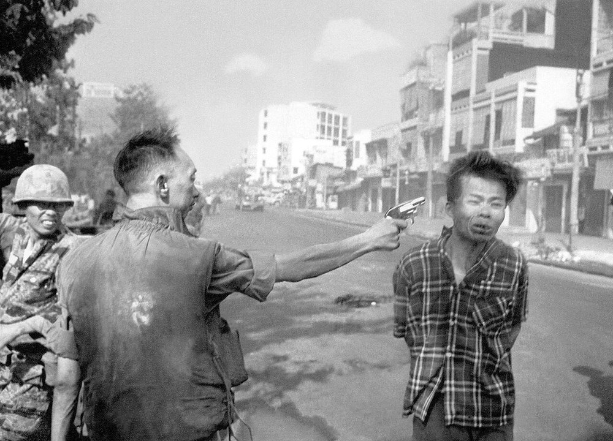

Saigon Execution
Eddie Adams · 1 February 1968 · Photograph
In copyright. Look and learn: shown for study, not for download.
Eddie Adams, thirty-four, had been a Marine combat photographer in Korea and had covered Vietnam for the Associated Press since 1965. On 1 February 1968 he and an NBC crew were about to leave the Ấn Quang Pagoda in Saigon, having seen nothing by noon, when Marines brought in a prisoner and the police chief, Nguyễn Ngọc Loan, shot him. Adams later said he was not sure what he had caught until the film was developed. The picture ran in most American newspapers the next morning and won the 1969 Pulitzer Prize. Who the prisoner was is still disputed.